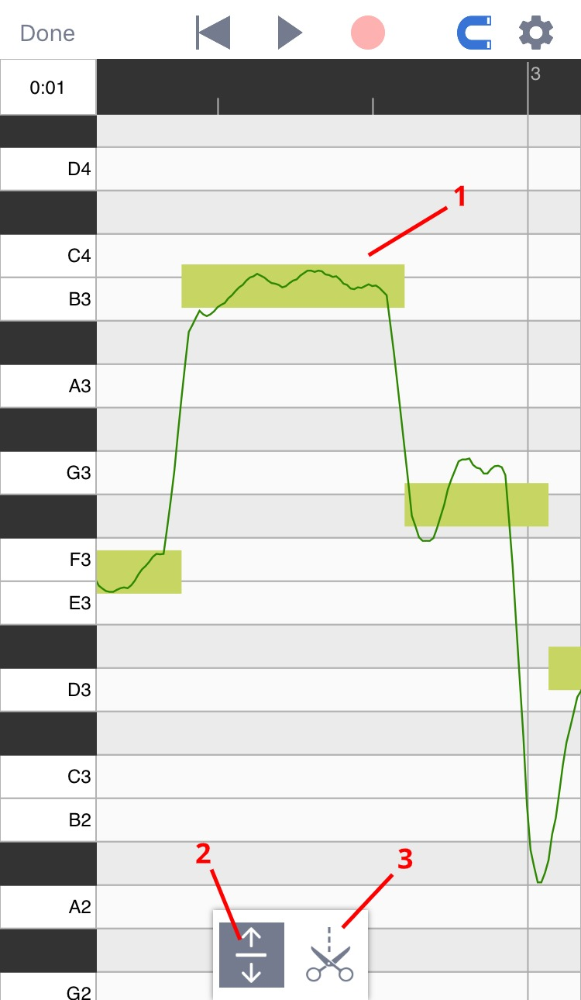
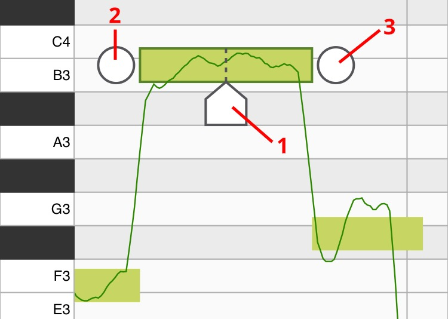

上手指南
音樂黏土是一款強大的音高編輯器。當你用音樂黏土錄歌的時候，程序的算法會分析你人聲的音高，並且允許你對每一個音符的音高進行修改。雖然算法這詞聽起來可能有點複雜不過音樂黏土的界面非常簡單，只要了解了下面兩個程序頁面就可以輕鬆使用。
工程頁面
在工程頁面下你可以添加音軌，錄製人聲並擺放已經錄好的片段。

1
菜單: 這裡有保存，讀取和導出按鈕。
2
指針重置，播放，錄音。
3
對齊網格: 點開後所拖動的東西會自動對齊網格。
4
設置: 這裡有節拍器，速度和拍子記號的設置。
5
音軌圖標: 點一次會選中此音軌，點兩次可以打開音軌的音量設置。
6
人聲音頻: 人聲音頻上的微型圖展示了音頻裡所有的音符，雙擊人聲音頻可以進入音高編輯頁面。
7
添加音軌: 點這裡可以添加空音軌和伴奏音頻。
8
伴奏音頻: 伴奏音頻會以聲波圖的形式顯示在界面上。
音高編輯頁面
在音高編輯頁面裡你可以對每一個音符的音高進行修改。（通過雙擊人聲音頻來打開該頁面）

1
算法檢測到的音符: 方形的輪廓代表音符的大致音高。輪廓裡的線條代表了在每一時刻的精準音高。
2
主工具: 用來調整音符音高。
3
音符分離工具: 用這個工具來切分或合併音符。（具體見下圖）

1
位置標記:移動它來設置你想在哪里切開當前音符。移動到位後點擊位置標記（或者上拉）即可把當前音符一分為二。
2
合併按鈕（左）: 點這裡可以讓當前音符和左邊的音符合併。
3
合併按鈕（右）: 點這裡可以讓當前音符和右邊的音符合併。